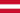
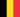
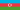

| GP | País | Data | Circuito | Número de Voltas |
|---|---|---|---|---|
| GP do Bahrein | 29 de fevereiro a 02 de março | Circuito Internacional do Bahrain | 57 voltas | |
| GP da Arábia Saudita | 07 a 08 de março | Circuito de Jeddah Street | 50 voltas | |
| GP da Austrália | 22 a 24 de março | Circuito de Melbourne | 58 voltas | |
| GP do Japão | 05 a 07 de abril | Circuito de Suzuka | 53 voltas | |
| GP da China | 19 a 21 de abril | Circuito Internacional de Xangai | 56 voltas | |
| GP de Miami | 03 a 05 de maio | Circuito de Miami | 57 voltas | |
| GP da Emilia Romagna | 17 a 19 de maio | Autódromo Enzo e Dino Ferrari | 63 voltas | |
| GP de Mônaco | 24 a 26 de maio | Circuito de Monte Carlo | 78 voltas | |
| GP do Canadá | 07 a 09 de junho | Circuito Gilles Villeneuve | 70 voltas | |
| GP da Espanha | 21 a 23 de junho | Circuito de Barcelona-Catalunya | 66 voltas | |
| GP da Áustria |  | 28 a 30 de junho | Red Bull Ring | 71 voltas |
| GP da Grã-Bretanha | 05 a 07 de julho | Circuito de Silverstone | 52 voltas | |
| GP da Hungria | 19 a 21 de julho | Circuito de Hungaroring | 70 voltas | |
| GP da Bélgica |  | 26 a 28 de julho | Circuito de Spa-Francorchamps | 44 voltas |
| GP da Holanda | 23 a 25 de agosto | Circuito de Zandvoort | 72 voltas | |
| GP da Itália | 30 de agosto a 01 de setembro | Autódromo Nacional de Monza | 53 voltas | |
| GP do Azerbaijão |  | 13 a 15 de setembro | Circuito de Baku | 51 voltas |
| GP de Singapura | 20 a 22 de setembro | Circuito de Marina Bay | 61 voltas | |
| GP dos Estados Unidos | 18 a 20 de outubro | Circuito das Américas | 56 voltas | |
| GP do México | 25 a 27 de outubro | Autódromo Hermanos Rodríguez | 71 voltas | |
| GP de São Paulo | 01 a 03 de novembro | Autódromo José Carlos Pace | 71 voltas | |
| GP de Las Vegas | 21 a 23 de novembro | Las Vegas Street Circuit | 55 voltas | |
| GP do Catar | 29 de novembro a 01 de dezembro | Circuito Internacional de Losail | 57 voltas | |
| GP de Abu Dhabi | 06 a 08 de dezembro | Circuito de Yas Marina | 55 voltas |